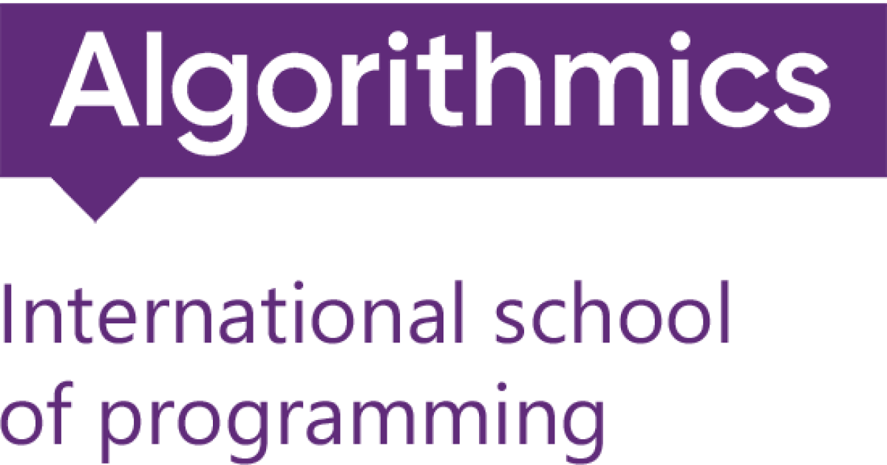

CYBERSECURITY • AUTOMATION • LABS
Hi, I’m Jaskaran.
I’m a Sheridan cybersecurity student focused on hands-on security tooling, practical labs, and building clean, real-world projects.

Quick intro
Building a portfolio around cybersecurity projects, automation, and practical labs. This site highlights experience, builds, and ways to get in touch.
Replace assets/img/jaskaran.png when you send your photo.
Highlights
- Security labs, Windows Server hardening, log collection, and detection practice
- Automation-first mindset for repeatable workflows
- Strong communication from training and support roles
Education
Sheridan and Oakridge highlights.

Recent roles
Training, IT support, systems rollout, and classroom operations.


Community
Cybersecurity workshop delivery and student mentorship through community programs.